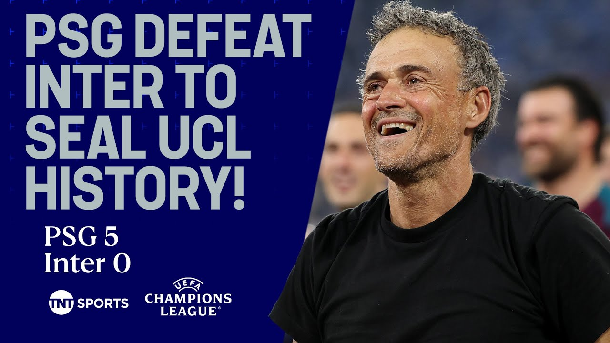

【庆祝！巴黎圣日耳曼5-0横扫国际米兰夺得欧冠冠军🏆 #欧冠】
Summary: PSG's dominant Champions League victory showcases a young, dynamic team with immense potential, led by Luis Enrique, whose tactical brilliance and squad depth suggest a bright future for the club.
摘要： 巴黎圣日耳曼在欧冠中的统治性胜利展现了一支年轻、充满活力的球队及其巨大潜力，在路易斯·恩里克的带领下，其战术智慧和阵容深度预示着俱乐部的光明未来。

⏱️ Estimated Reading Time: 10 min
[Music] They've waited this long to get a European trophy, the big one, the Champions League, and now they have a team that could go further into the future and pick up more trophies and more trophies going.
[音乐] 他们等待了这么久才赢得欧洲顶级赛事——欧冠奖杯，如今他们拥有一支能在未来走得更远并赢得更多荣誉的球队。
Yeah, the guys mentioned in commentary, these guys are going to be the team to beat for potentially a decade.
是的，解说员提到，这支球队可能在未来十年内都是难以击败的对手。
You know, they're in their early 20s.
要知道，他们大多才二十出头。
The only one who I think is Marinos, just 31.
唯一年纪稍大的是31岁的马里诺斯。
The rest of them are young, young, brilliant players and they're going to get better.
其余球员年轻、才华横溢，且会不断进步。
They're going to Real made a really good point.
他们转会皇马的观点很有道理。
It's going to be hard to get players to actually break into this starting 11 if they're going to recruit players.
若他们继续引援，其他球员很难跻身这支首发阵容。
Rio Ferdinand has been up in commentary watching what an exceptional performance that was for PSG.
里奥·费迪南德在解说中称赞巴黎圣日耳曼的非凡表现。
Rio, we thought that perhaps they could win, but not a demolition job like this.
里奥，我们原以为他们会赢，但没想到是如此碾压式的胜利。
No, I mean, I was I've always said I thought they would win.
不，我一直认为他们会赢。
Lockout stages came, they looked like a team to beat for me, but to come into a final with such an experience at this level and to perform with the confidence and the purity that we saw today.
淘汰赛阶段，他们已是夺冠热门，但能以如此经验、信心和纯粹的表现闯入决赛并发挥出色，实属罕见。
It's absolutely amazing.
这简直太不可思议了。
And I said upstairs, I think it's for a lot of the other teams.
我在解说席上也提到，其他球队恐怕难以追赶。
They're going to have to go some to stay with this team because they're young, they're hungry, they're a vibrant team.
这支球队年轻、充满渴望、活力四射，其他队伍需加倍努力才能与之抗衡。
They're dynamic and they've got a manager who's instilled now a mentality and not only that, a confidence that it's hard to this is a train that could be hard to stop right now.
他们充满活力，且拥有一位塑造了球队心态和信心的主帅，如今这列火车势不可挡。
Their name now being etched on the Champions League trophy.
他们的名字已刻在欧冠奖杯上。
It's hard to do it once, but Lewis Enrique has managed to do this twice now.
夺冠一次已属不易，但路易斯·恩里克如今已两次达成。
Yeah, we spoke about the game, you know, is he does he deserve to be mentioned in the same breath as your Ancelotties, your Jose Mourinhos, your Pepios?
是的，我们讨论过他是否配得上与安切洛蒂、穆里尼奥、瓜迪奥拉齐名。
The answer is yes.
答案是肯定的。
And in such an emphatic way as well.
而且是以如此令人信服的方式。
This team he's created, what he's put together over the last what year or two.
他用一两年时间打造的这支球队。
This can beat you in any given way.
能以任何方式击败对手。
It can beat you with speed.
可以用速度取胜。
It can beat you with quality.
可以用技术碾压。
It can force you into a low block and have the variety to open low blocks up.
能迫使对手退防，并有多种手段破解密集防守。
It It's fantastic with set pieces.
定位球战术极其出色。
It's got so many game changers.
拥有众多改变战局的球员。
I mean the talent across this squad.
这支队伍的才华横溢。
I mean it it's it's a special group of players and they're getting coached by a special person as well.
这是一群特别的球员，由一位特别的教练执教。
We asked a question before the match even kicked off.
赛前我们提出一个问题。
What would it take for Lewis Enrique to join that group of really elite elite managers?
路易斯·恩里克需如何跻身顶级名帅之列？
Some of you said he's already in there.
有人认为他已在此列。
Stephen, you said perhaps this.
斯蒂芬，你曾提到这点。
I tell you one way to answer.
答案之一是：
Go and put in the best Champions League performance there's ever been.
奉献欧冠史上最佳表现。
I mean I'm 45 years of age.
我45岁了。
I've never seen a performance like that.
从未见过如此表现。
I mean, you know, challenge that.
可以说，无人能及。
Challenge that.
难以超越。
We wondered as well if this was going to be a night for the goalkeepers, but in terms of one of the goalkeepers, he barely had to stop anything.
我们曾猜测这会是门将之夜，但其中一位门将几乎无事可做。
Yeah.
是的。
I mean, he had one save to make and he done it well.
他仅有一次扑救，且完成得很好。
And I think, listen, you need all your players to performing perform in moments like this to be successful and to win.
要取得成功并夺冠，所有球员都需在这样的时刻发挥。
And Paris Sanjaman to every man, even the substitutes that came on impacted the game in positive ways.
巴黎圣日耳曼全员，包括替补球员，均对比赛产生积极影响。
Rio, you know, yourself, I mean, the type of defender you was, to be a dominant team possession wise, you got to be comfortable defending the halfway line.
里奥，作为曾主导控球的防守球员，你深知必须适应在中场线防守。
How good was PSG's back four tonight?
今晚巴黎的后防线多出色？
They were all they were brilliant.
他们表现完美。
I mean, Hakeime and what he done with the ball, scored the goals, obviously impacted going forward.
哈基米控球得分，对进攻贡献显著。
But Pacho is Yeah, he's come out of nowhere.
而帕乔堪称横空出世。
23 years old.
年仅23岁。
He's come out of nowhere.
他此前默默无闻。
I think his first Champions League game was this season.
他的欧冠首秀似乎就是本赛季。
Well, there are great athletes, aren't they?
他们都是顶级运动员。
So, they can squeeze the pitch and be aggressive.
能压缩空间并保持侵略性。
Yeah.
没错。
And I think today's game, you've got to be able to do that.
如今的比赛必须做到这点。
You've got to be able to one play with the ball and they're all comfortable with the ball and can play through different parts of the pitch.
必须擅长控球，而他们技术娴熟，能覆盖全场。
But again, if you're going to be an attacking I mean a dominant team pressing the game high like we saw Dembele was like a sprinter at the beginning in the blocks waiting to get out.
若想成为高位压迫的强队，正如登贝莱如起跑线前的短跑选手般伺机而动。
If you're going to do that the people behind you have to be comfortable on the halfway line with big spaces around them.
执行此战术时，后防球员必须适应中场线附近的大片空当。
And you know what else as well to a man?
还有一点：
There's no ego.
他们没有个人主义。
They're prepared to do the dirty work.
愿意干脏活累活。
I think they were 4-0 up and both wingers are chasing back to regain the ball.
即便4-0领先，边锋仍回追夺球。
They're prepared to do the hard yards.
他们愿意付出艰辛。
They fight for each other.
为彼此而战。
They survive when they need to survive.
在需要时坚韧不拔。
They're an all round good team.
这是一支全面的优秀球队。
They're brilliant at both sides of the game.
攻防俱佳。
What about Fatinho?
法蒂尼奥呢？
Oh, it was just like he had the freedom in the pitch.
他在场上如鱼得水。
Nobody got near anybody.
无人能近身。
New Jabby.
新哈维。
He's the new Jabi.
他就是新哈维。
Yeah, he is.
确实如此。
But you know, I couldn't the one thing I couldn't believe they didn't get any tackles in, did they?
但难以置信的是他们几乎没有铲球。
You know, they they weren't physical enough.
他们对抗不足。
They just it was But the other side of the game as well.
但另一方面——
Well, look, Vatin, you mentioned him there.
你提到的瓦蒂姆。
Why don't we get some reaction with him?
何不听听他的反应？
He's speaking now with Jules Breach.
他正与朱尔斯·布里奇交谈。
Vinhia, congratulations.
维尼亚，恭喜。
PSG are Champions League winners.
巴黎圣日耳曼是欧冠冠军。
What does it mean to finally deliver the trophy this club so desperately wanted?
为俱乐部赢得梦寐以求的奖杯意味着什么？
It means everything.
意味着一切。
It means everything uh to the fans.
对球迷意味着一切。
I think I think they are the the the the the main uh reason that we wanted to win this trophy, but we wanted to win this trophy for a lot of reasons.
球迷是我们夺冠的主因，但夺冠还有许多其他意义。
It's our dream.
这是我们的梦想。
It's everyone's dream.
是每个人的梦想。
It's my dream.
是我的梦想。
And I'm glad we we made it.
很高兴我们实现了。
It's uh it's incredible.
这太不可思议了。
Your dreams have come true.
你的梦想成真了。
The club though have tried absolutely everything.
俱乐部已竭尽所能。
Even the biggest stars in the world couldn't do what you've done tonight.
即便世界顶级球星也未能达成你们今晚的成就。
What does it say about this group of players?
这说明了这支球队的什么？
It says a lot like you said the group of players the the team it's a very good team the the result it's not uh by magic uh we are a very good team and we are very very happy that we did it like like this and we now we're going to celebrate go and enjoy it.
正如你所说，这证明了球队的实力，成绩绝非偶然。我们是一支优秀团队，非常高兴以这种方式夺冠，现在要去庆祝了。
Thank you.
谢谢。